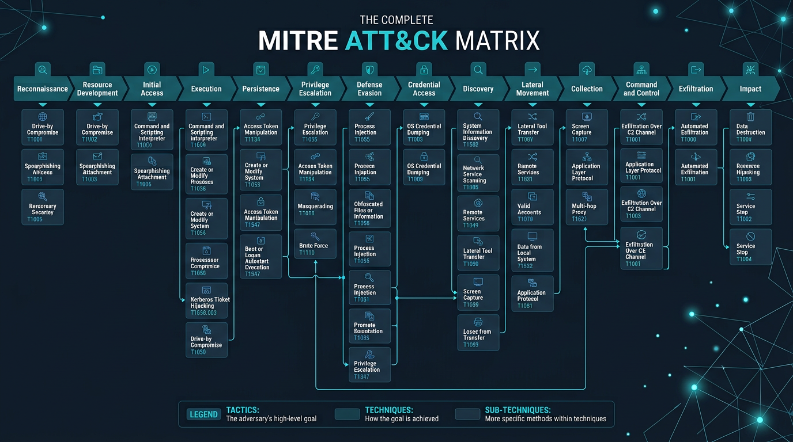

TA0043 — Reconnaissance
Reconnaissance
Collecte d'informations sur la cible avant l'attaque : scans de ports, recherches publiques, analyse de réseaux sociaux, phishing informatif.
Guide visuel et pédagogique pour comprendre le comportement des attaquants — toutes les tactiques, techniques, exemples réels, et conseils de défense, entièrement en français.

Un référentiel mondial ouvert qui décrit comment les adversaires informatiques opèrent. Il structure leur comportement en 14 tactiques, des centaines de techniques et des milliers de sous-techniques.
Tactique (TAxxxx) = l'objectif de l'attaquant à un moment donné (ex : obtenir un accès). Technique (Txxxx) = la méthode générale (ex : phishing). Sous-technique (Txxxx.xxx) = la variante précise (ex : phishing par lien malveillant).
Les équipes de sécurité utilisent ATT&CK pour cartographier leurs défenses, créer des règles de détection basées sur des comportements réels, simuler des attaques (red teaming), et prioriser leurs investissements.
Chaque tactique représente une étape logique dans le parcours d'un attaquant, de la reconnaissance jusqu'à l'impact final.
Collecte d'infos
Préparation
Pénétration
Code malveillant
Maintien
Privilèges
Défense
Vol d'identifiants
Exploration
Déplacement
Données ciblées
Contrôle distant
Transfert des données
Destruction
Cliquez sur une tactique pour découvrir ses techniques principales, des exemples concrets et des conseils de défense détaillés.
Collecte d'informations sur la cible avant l'attaque : scans de ports, recherches publiques, analyse de réseaux sociaux, phishing informatif.
Préparation des outils et infrastructures : acquisition de comptes, domaines, certificats frauduleux, serveurs C2, développement d'outils personnalisés.
Premier point d'entrée dans le réseau : phishing (lien, pièce jointe), exploitation d'applications exposées, comptes valides volés, compromission de la chaîne d'approvisionnement.
Exécution de code malveillant : interpréteurs de commandes (PowerShell, Bash, Python), macros dans des documents, scripts téléchargés, tâches planifiées.
Maintenir l'accès malgré redémarrage ou changement de mot de passe : tâches planifiées, services malveillants, clés de registre, comptes supplémentaires.
Passer d'un compte standard à administrateur : injection de processus, manipulation de tokens d'accès, contournement de UAC, exploitation de vulnérabilités locales.
Éviter la détection : désactivation d'antivirus/EDR, fichiers obscurcis (compression, chiffrement, stéganographie), suppression des journaux d'événements.
Vol de mots de passe et identifiants : dumping mémoire LSASS (Mimikatz), brute-force, extraction depuis navigateurs et gestionnaires de mots de passe.
Exploration du réseau et du système : comptes utilisateurs, services réseau, configurations, partages de fichiers, systèmes accessibles.
Déplacement dans le réseau : RDP, SMB/Windows Admin Shares, SSH, VNC, passage du hash (Pass the Hash), utilisation d'outils légitimes.
Rassemblement des données ciblées : fichiers sensibles, emails, captures d'écran, enregistrements audio, données dans les dépôts (SharePoint, bases).
Canal de communication distant : protocoles applicatifs (HTTP, HTTPS, DNS), canaux chiffrés, tunnels (SSH, VPN), services cloud (Discord, Slack, Dropbox).
Transfert des données volées hors de l'environnement : via le canal C2, services web légitimes (Google Drive, Dropbox), protocoles alternatifs (Bluetooth, WiFi).
Perturbation ou destruction : chiffrement (ransomware), suppression massive de données, arrêt de services critiques, corruption de données, redémarrage forcé.
Voir comment des attaques réelles suivent exactement le cycle décrit par le framework.
NotPetya a utilisé la mise à jour malveillante de MeDoc (chaîne d'approvisionnement) pour l'accès initial. Il s'est propagé via EternalBlue et PsExec (mouvement latéral), a supprimé des journaux (évasion), et a chiffré massivement des systèmes (impact). L'impact financier estimé dépasse 10 milliards de dollars.
Les attaquants ont compromis le processus de build de SolarWinds, injectant un backdoor dans des mises à jour légitimes. Ils ont utilisé des noms de processus légitimes (évasion), communiqué via HTTPS vers des domaines contrôlés (C2), et collecté des données sensibles dans le cloud avant exfiltration progressive.
Le framework n'est pas seulement un catalogue d'attaques — c'est un outil opérationnel de défense.
Comparez vos outils (EDR, SIEM, pare-feu) aux techniques ATT&CK. Identifiez quelles techniques ne sont pas couvertes par vos contrôles actuels.
Créez des règles basées sur des comportements réels (ex : Word lançant PowerShell) plutôt que des signatures fixes de malware.
Simulez des attaques (red team) basées sur des groupes APT connus (APT29, APT28) en suivant leurs techniques documentées.
Concentrez vos ressources sur les tactiques et techniques les plus utilisées par les menaces actives dans votre secteur.
Pour chaque technique ATT&CK, posez la question : "Mon EDR détecte-t-il cela ?", "Mon SIEM a-t-il une règle pour cela ?", "Mon pare-feu bloque-t-il cela ?". Les lacunes identifiées deviennent votre feuille de route pour améliorer vos défenses.
Cette affiche résume visuellement les 14 tactiques, leurs techniques principales et leurs interconnexions dans le cycle d'attaque.
Télécharger le guide complet (Markdown) Explorer la matrice interactive